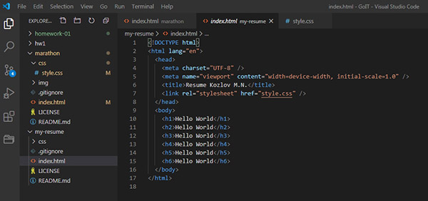
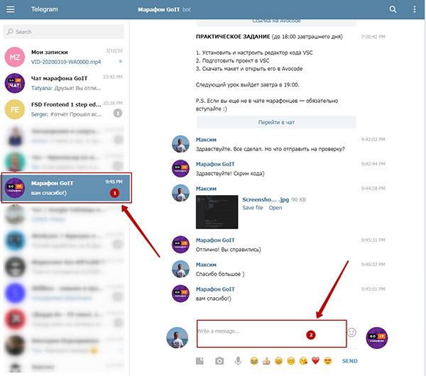

Домашнее задание №1
- Посмотреть все видео первого дня:
- Установить и настроить редактор кода VSC
- Подготовить проект в VSCode: Следуя за лектором, прописать весь необходимый код (просто все повторить).
- Скачать макет и открыть его в Avocode. "Поиграться" с функционалом: определить цвет заголовка, размер шрифта и т.д.
- Сделать скриншот вашего кода (разметки) в VS Code с помощью любой утилиты для скриншотов. Например, Joxi.
-
У вас должен получится вот такой скриншот:

-
Скриншот отправляем в телеграм-канале "Марафон GoIT" через окно
сообщения в самом низу, как показано на скрине:

- Ждете подтверждения выполнения от ментора
- Радуетесь своим успехам и ждете следующего задания
ДЗ нужно сдать к 18:00 21.03.2020
Удачи